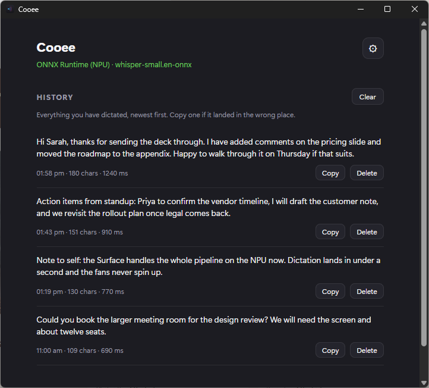
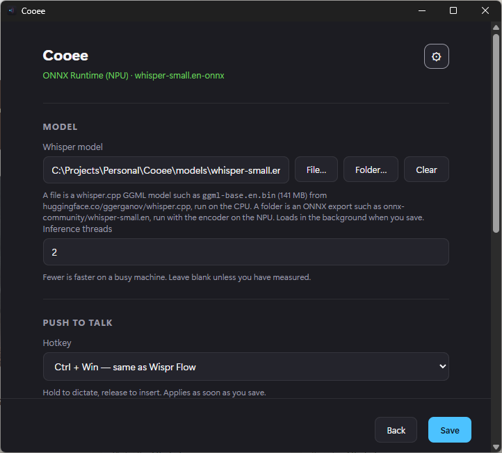

Cooee is dictation I built for my own Copilot+ laptop: hold CtrlWin, say what you mean, let go, and clean text lands in whatever app you're in. The speech model runs on the NPU, so it's fast, quiet, and entirely local.
On my personal devices, Wispr Flow changed how I write. Hold a key, talk, and the words come out clean. Once you have that, typing feels slow.
But it sends your voice to the cloud, and on a work PC that didn't sit right with me. Meeting notes, customer names, half-formed thoughts about people and deals: that's not audio I want leaving the machine.
Windows has voice typing built in (WinH), and it's fine. But it isn't the same. No personal dictionary for the names it keeps getting wrong, no history to recover a sentence that landed in the wrong window, and the output needs more tidying than it should.
So I built the version I wanted: the Wispr Flow loop, running on a local speech model, on the NPU that was already sitting in my Surface.
The Copilot+ PCs ship with a neural processor that mostly sits idle. It turns out it's exactly what an open speech model like Whisper needs: the same model that took five seconds per sentence on the CPU takes under one on the NPU, with the fans off. I also tried an on-device language model for cleaning up the text. It over-edited, so that part is deliberately rule-based.
It sits in the tray. There's no window to find and no mode to switch into; the app you're already in is the target.
An email in Outlook, a Teams reply, a Word doc, a browser form. Anything with a text field.
A small pill appears on the monitor you're working on and pulses with your voice. Say it the way you'd say it out loud, fillers and all.
Under a second later the text is in the field: fillers gone, punctuation in, sentences capitalised, names spelled the way I taught it, and a space added if the cursor was up against a word.
Everything dictated is kept on this PC, newest first. One click puts it back on the clipboard.
Whisper, an open speech model, runs on the machine. There is no server, no account and no telemetry. Unplug the network and it works the same.
Both halves of the model, the listener and the writer, run on the Hexagon NPU of a Copilot+ PC. Sub-second results and the CPU is free for whatever else you're doing.
Add a name once. It's fixed in every transcript, and it's also shown to the model before it listens, so it usually gets it right the first time.
The main window is what you've said, newest first, with a copy button on each. Nothing dictated is ever lost to the wrong window.
Filler words removed, spoken punctuation applied, sentences capitalised, and a space added when the cursor is against a word.
Ctrl+Win by default, or Caps Lock, Right Ctrl, any chord you like. Hold to dictate and release to insert, or switch to latch and tap once to start and again to stop, for anyone who can't hold a chord steady for a whole sentence.


The honest version: the NPU wasn't the first idea, it was the only one left after measuring everything else.
small.en, at 0.8 seconds per sentence instead of 5.2. Compiled once per machine, cached, quick every launch after.One installer, nothing else to set up. There is an MSI on the same page if your machine prefers one.
Download CooeeAbout 37 MB. Version 1.1.0.
Cooee ships without a speech model. Download Setup-Cooee-Model.bat from the same page and double-click it: it fetches the model, puts it somewhere sensible, and points Cooee at it. Nothing to configure and no repository to clone.
The model is a separate download on purpose. There is no networking code compiled into Cooee at all, and a check in the repo fails the build if anyone ever adds any. That is what makes "nothing leaves your machine" a fact rather than a promise, so the download lives in a small script you can read before you run it.
About 925 MB, so give it a few minutes.
Open Cooee from the Start menu. The first load spends about twenty seconds getting the model ready for the NPU, once. Then put your cursor anywhere you can type, hold CtrlWin, say a sentence, and let go.
If holding two keys down is awkward, open the cog and switch to Latch: tap once to start, talk, tap again to insert.
Installed builds have been flagged as Trojan:Win32/Bearfoos.A!ml. That is a false positive, and it is also a completely fair guess. Cooee watches the keyboard globally, types into other applications, and touches the clipboard, which is also an accurate description of a keylogger. The classifier cannot tell the difference. The !ml suffix means a machine-learning hunch rather than a match against known malware.
The real fix is a code signing certificate, and this is a personal project that does not have one. So you are being asked to install an unsigned app that hooks your keyboard. Being cautious about that is the correct instinct. All the source is public, you are welcome to have someone you trust read it first, and if you are not comfortable then please do not install it.
Cooee is a personal project, not a product. If you hit trouble installing it, have questions about how it works, or want to talk about running speech models on the NPU, I'd like to hear from you.